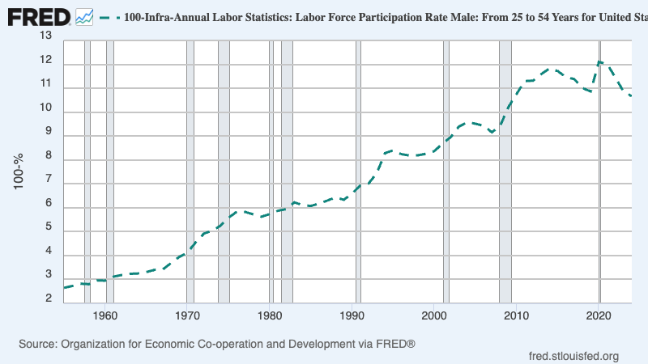

I publish a monthly email newsletter with personal updates and interesting things I read or learned that month. The latter is archived below. If you’d like to be added to the newsletter, email me.
▶️ Gemini has met Larry Page’s 2000 definition of artificial intelligence:
“Artificial intelligence would be the ultimate version of Google. If we had the ultimate search engine it would understand everything on the web it would understand exactly what you wanted and it would give you the right thing. That’s obviously artificial intelligence; be able to answer any question basically because almost everything is on the web right and so we’re nowhere near doing that now. However we can get incrementally closer to that and that’s basically what we work on and that’s tremendously interesting from an intellectual standpoint … so I expect to be doing that for a while.”
▶️ At the time of Gmail’s launch in 2004, Bill Gates couldn’t imagine needing more than 1G of email storage:
“How could you need more than a gig? What’ve you got in there? Movies? Power-Point presentations?”
▶️ Gemini 2.5 Pro can one-shot linear programming word problems
Given a linear programming problem with four constraints, Gemini correctly translates the constraints to a Python program using scipy’s linprog library. Two years ago, hand-massaging LLMs to do named entity recognition and formulation of constraints was an active area of research. NL4OPT was a competition to do just this. I came across this while looking into creating my own NL4OPT tool. I posed the problem to Gemini expecting it to fail. Needless to say, I was surprised. Tool use is the past, present, and future. Its interface is Python.
▶️ Above-market government salaries can compromise economic productivity: > “In many countries, public employees enjoy considerable job security and generous compensation schemes; as a result, many talented workers choose to work for the public sector, which deprives the private sector of productive potential employees. This, in turn, reduces firms’ incentives to create jobs, increases unemployment, and lowers GDP…. [Calibrating the model to Greece] we find that a 10% drop in public sector wages results in a 3.8% increase in private sector’s productivity, a 7.3% drop in unemployment, and a 1.3% increase in GDP.” “The Unintended Consequences of Meritocratic Government Hiring”. Geromichalos, Kospentaris.
I previously had a vague conception that part of Singapore’s success could be attributed to its high-paid bureaucrats. I’ll have to revisit this. What’s missing in this analysis is the flip side: does having brilliant bureaucrats afford a point of GDP in efficiency? Related, I read an interesting Substack post about Singaporean culture and why they don’t have entrepreneurs. It mentions the loss of talent to government. See also. “India, Greece, Brazil: How High Government Pay Wastes Talent and Drains Productivity”. Marginal Revolution
▶️ A larger fraction of Europeans die from preventable heat death than the fraction of Americans who die from firearms:
“Most of this death is preventable. The technology that prevents it is air conditioning. Barreca et al. (2016) find that heat deaths in America declined by about 75% after 1960, and that ‘the diffusion of residential air conditioning explains essentially the entire decline in hot day–related fatalities’” Europe’s crusade against air conditioning is insane. Noahpinion.
▶️ Gpt 5 can now create entire slop websites
GPT-5: It Just Does Stuff by Ethan Mollick (One Useful Thing). The website in question: https://chimerical-torte-b08774.netlify.app/
▶️ My new favorite (interview style) podcast is Tyler Cowen’s. Lex is out of his element in economics/politics. Dwarkesh is energetic, but asks too many niche, drawn-out questions (cynically, to show off). Tyler asks sharp, one sentence questions, guiding the conversation while letting the guest talk. In his episode with John Arnold, Tyler brought up one interesting question about solar: How do we prepare for volcanic events occurring every ~150 years? This is too long a horizon for the market to solve. How can the government ensure some base load of natural gas or nuclear is always available over 100s of years? Tyler also sees NIMBYism as nuclear’s greatest obstacle.
▶️ Aircraft carriers may already be a relic. Here’s Christopher Kirchoff on Tyler Cowen’s Podcast
“Similarly, anybody who’s read even news articles about hypersonic weapons should decide that buying more aircraft carriers is not a good thing. But we do need some of those resources shifted to this new defense ecosystem that’s very experimental, that’s building swarming weapons.”
I may be reading too far into this, but it seems he’s saying “if you’ve read the classified briefs it’d be even more obvious”
▶️ ️️10% of 25 to 54-year-old men are not seeking employment 
▶️ Age-graded classrooms are the worst form of schooling … except for all the others
Scott Alexander published a good (anonymous) post about schooling. The thesis is that age-graded classrooms work because they optimize student motivation. Peer pressure is a great motivator; so while often inefficient, there is a reason lock-stepping students onto the same track as others has become the standard. The author estimates that around 5% of students are intrinsically motivated enough to teach themselves (he calls them no-structure learners). This is why considering selection bias is so important.
“Here’s something you have to remember. It’s easy to cherry-pick in education. If you want to start a school to prove that penguin-based learning is the future, that penguin meditation and penguin-themed classrooms are superior to the stuffy, traditional, obsolete schools we have now, you can. It’s simple. Find a way to only accept no-structure and very low-structure learners. Then start your school. Do your penguin meditation, make sure there’s a basic structure for learning core academic skills, and you’re set. The results will be great, you can publish articles about the success of your method, if you’re lucky you’ll get some of that sweet sweet philanthropy money”
I was recently excited to learn about Math Academy. I fear now their results may boil down to selection bias.
▶️ The best graphic of US renewable energy supply I’ve come across.
Note the y-axes are not the same. For solar (B) this is the nameplate capacity. It is common to assume a capacity factor (% of time the sun is shining) of 20% and therefore 5x the required wattage is required to be built in nameplate capacity (along with batteries, transmission, etc.). For reference, the US total primary energy consumption is 94 quadrillion Btu, equal to 3,100 GW on average. I’ve placed vertical lines at this point.
Eyeballing this, solar and land-based wind look good while offshore wind is a no-go. I don’t know enough about the types of geothermal to comment there.